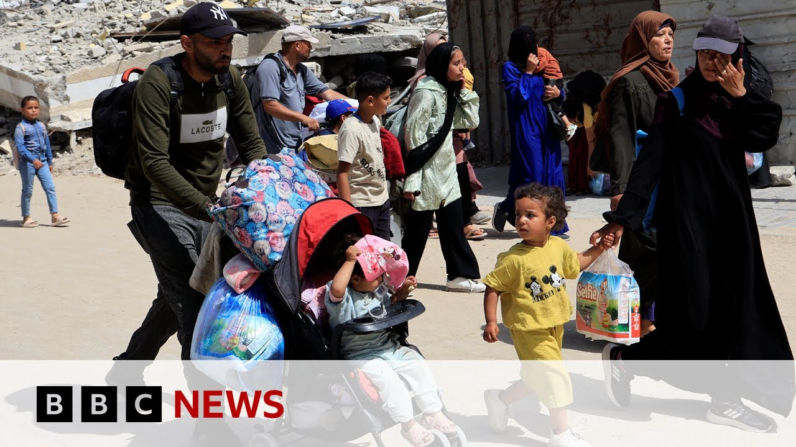

【英国、法国和加拿大威胁对以色列在加沙的军事行动采取行动 | BBC新闻】
Summary: UK, France and Canada threaten action against Israel over Gaza offensive. Israel's prime minister has condemned the leaders of France, Britain, and Canada after they called for an end to his country's renewed military offensive in Gaza.
摘要： 英国、法国和加拿大威胁对以色列在加沙的军事行动采取行动，以色列总理谴责了法国、英国和加拿大的领导人，此前他们呼吁结束该国在加沙的新一轮军事行动。

⏱️ Estimated Reading Time: 12 min
Israel's prime minister has condemned the leaders of France, Britain, and Canada after they called for an end to his country's renewed military offensive in Gaza.
以色列总理谴责了法国、英国和加拿大的领导人，此前他们呼吁结束该国在加沙的新一轮军事行动。
Benjamin Netanyahu called their remarks a huge prize for Hamas and insisted Israel would continue to press for what he described as a total victory over Hamas.
本杰明·内塔尼亚胡称他们的言论是对哈马斯的巨大奖励，并坚称以色列将继续争取他所谓的对哈马斯的彻底胜利。
Well, the joint statement signed by Sakir Stalmer, Emanuel Macron, and Mark Carney says while they have always supported Israel's right to defend Israelis against terrorism, the current escalation is wholly disproportionate.
由萨基尔·斯塔尔默、埃马纽埃尔·马克龙和马克·卡尼签署的联合声明称，尽管他们一直支持以色列保卫国民免受恐怖主义侵害的权利，但当前的升级行动完全不成比例。
And it warns if Israel does not cease the renewed military offensive and lift its restrictions on humanitarian aid, we will take further concrete actions in response.
声明警告称，如果以色列不停止新一轮军事行动并解除对人道主义援助的限制，他们将采取进一步具体行动作为回应。
Well, Israel eased its complete blockade of the territory on Monday and let in a handful of aid trucks, but the UN says far more supplies are needed.
以色列于周一放宽了对该地区的全面封锁，允许少量援助卡车进入，但联合国表示需要更多物资。
The bombardment of Gaza has continued overnight with reports of deadly air strikes.
加沙的轰炸持续整夜，有报道称发生了致命空袭。
This comes not long after the UN's humanitarian chief has called the first delivery of aid into Gaza for 11 weeks a drop in the ocean.
此前不久，联合国人道主义事务负责人称11周以来首次进入加沙的援助物资是杯水车薪。
We'll speak to our diplomatic correspondent Paul Adams in a moment, but first, let's hear from Yoland Nell in Jerusalem.
稍后我们将与外交记者保罗·亚当斯对话，但首先请听耶路撒冷的约兰德·内尔的报道。
Yan, first those uh comments then from the UK, Canada and France and the reaction from Israel.
约兰德，首先谈谈英国、加拿大和法国的言论以及以色列的反应。
Talk us through what's been happening.
请为我们梳理一下目前的情况。
Well, we've had the Israeli prime minister condemning that joint statement um saying it's a huge prize for Hamas and that it will invite further atrocities of the kind um that was perpetrated on the 7th of October 2023 and the deadly attack on southern Israel that killed some 1,200 people.
以色列总理谴责了联合声明，称其是对哈马斯的巨大奖励，并将引发类似2023年10月7日针对以色列南部的致命袭击那样的暴行，该袭击导致约1200人死亡。
Um he also said that Israel would continue to defend itself by just means until total victory.
他还表示，以色列将继续以正当手段自卫，直至取得彻底胜利。
But I think you know this won't be um so easily brushed off by the Israeli leader because these are important allies of the country, the UK, uh France and Canada that have come out with this very um harshly worded statement uh really some of the strongest criticism um that we've seen so far of Israel's handling of the war and threatening um concrete actions um as well without going into what those might be.
但以色列领导人不会轻易忽视这一点，因为英国、法国和加拿大是该国的重要盟友，他们发表了措辞严厉的声明，这是迄今为止对以色列处理战争方式的最强烈批评之一，并威胁采取具体行动，尽管未说明具体措施。
Now, this all happening as we continue to see Israel's deadly bombardment, this intense military offensive going on in the Gaza Strip overnight.
与此同时，以色列的致命轰炸仍在继续，加沙地带整夜遭受猛烈军事进攻。
The Hamas run civil defense is saying that at least uh 44 people have been killed, most of those within the space of about half an hour.
哈马斯管理的民防部门称，至少有44人丧生，其中大多数是在约半小时内死亡的。
We understand from local sources when there were Israeli strikes that hit a school being used as a shelter for displaced people in Gaza City um in the southern part of the Gaza Strip.
我们从当地消息来源获悉，以色列的空袭击中了加沙城一所用作流离失所者避难所的学校，该地位于加沙地带南部。
Um there was a fuel station that's disused being used as a tent city for displaced people that was hit, a residential building of three stories as well.
一座废弃加油站被用作流离失所者的帐篷城，也遭到袭击，还有一栋三层住宅楼。
And uh you know still we're waiting to see what aid goes into Gaza in the course of the day.
我们仍在等待观察今天有多少援助物资进入加沙。
lots of safety and logistical issues given the ongoing um Israeli military offensive.
由于以色列持续的军事进攻，存在许多安全和后勤问题。
But now that Israel has um eased this blockade, it's been a total blockade of the Gaza Strip for 11 weeks now with no food, no medicines, no fuel, no shelters going into Gaza.
尽管以色列放宽了封锁，但加沙地带已被全面封锁11周，没有食物、药品、燃料或庇护所进入。
There's really a dire humanitarian situation.
人道主义局势极其严峻。
And we've heard that only nine lorry loads of aid were cleared um for entry into Gaza uh one day ago.
我们听说一天前仅有九卡车援助物资获准进入加沙。
Um a senior UN official has told the BBC this morning that there are um this clearance that's been given for a hundred or so lorry loads.
一位联合国高级官员今早告诉BBC，已批准约一百卡车物资进入。
But of course this is being seen as a drop in the ocean given the huge needs of a population of 2 million people.
但对于200万人口的巨大需求来说，这仍是杯水车薪。
You land for the moment.
约兰德，暂时到这里。
Thank you very much.
非常感谢。
You land now in Jerusalem and as we said we'll speak to uh Paul Adams in just a moment but Yoland was referring there to the aid situation in Gaza.
约兰德现在在耶路撒冷，稍后我们将与保罗·亚当斯对话，但她刚才提到了加沙的援助情况。
While the UN's humanitarian relief chief Tom Fletcher, a former British diplomat, has been speaking to the BBC in the last hour, saying just five aid trucks were cleared to enter after Israel's blockade was lifted, but are stuck on the border.
联合国人道主义救济负责人、前英国外交官汤姆·弗莱彻一小时前向BBC表示，以色列解除封锁后仅批准五辆援助卡车进入，但它们仍滞留在边境。
That's a drop in the ocean.
这是杯水车薪。
And and let's be clear, those five trucks are just sat on the other side of the border right now.
必须明确的是，这五辆卡车目前只是停在边境另一侧。
They've not reached the communities they need to reach.
它们尚未抵达需要援助的社区。
And you know, let me describe what is on those trucks.
让我描述一下卡车上的物资。
This is baby food, baby nutrition.
这是婴儿食品和营养品。
There are 14,000 babies that will die in the next 48 hours.
未来48小时内将有1.4万名婴儿死亡。
unless we can reach them.
除非我们能送达这些物资。
This is not food that Hamas are going to steal.
这不是哈马斯会偷走的食物。
No, we run the risk of looting.
不，我们面临被抢劫的风险。
We run the risks of uh being hit as part of the Israeli military offensive.
我们面临被以色列军事行动击中的风险。
We run all sorts of risks trying to get that baby food through to those mothers who cannot feed their children right now because they're malnourished.
我们冒着各种风险试图将婴儿食品送给那些因营养不良而无法喂养孩子的母亲。
Tom Fletcher.
汤姆·弗莱彻。
Well, let's speak to our diplomatic correspondent, Paul Adams.
现在让我们与外交记者保罗·亚当斯对话。
And these comments from these three uh allies of Israel, Paul, I mean, how significant are they?
保罗，以色列这三个盟友的言论有多重要？
It feels pretty significant.
感觉非常重要。
I mean, that that some of that language that was used in the statement issued last night was almost unprecedented.
昨晚声明中的一些措辞几乎是前所未有的。
You know, the level of human suffering in Gaza is intolerable.
加沙的人道苦难程度令人无法容忍。
They said it they described the Hamas attacks of October the 7th as heinous and said that Israel had the right to rep to respond.
他们将哈马斯10月7日的袭击描述为“骇人听闻”，并表示以色列有权回应。
But they they described the escalation as, in their words, wholly disproportionate.
但他们称当前的升级行动“完全不成比例”。
And the fact that the long statement included a warning towards the end of further concrete steps certainly will have the Israelis wondering whether uh some of Israel's closest allies are now beginning to think about things like uh recognizing the state of Palestine.
这份长篇声明末尾包含采取进一步具体措施的警告，这肯定会让以色列人怀疑其最亲密盟友是否开始考虑承认巴勒斯坦国等问题。
Something that the French have indicated they might do at a conference in New York uh next month.
法国已暗示可能在下月纽约的一次会议上采取行动。
Uh possibly reconsidering arm sale.
可能重新考虑武器销售。
Britain has already uh had a partial suspension of licenses uh since uh late last year.
英国自去年底已部分暂停许可证发放。
Uh possibly revisiting the kind of trade deals that countries had with Israel.
可能重新审视各国与以色列的贸易协议。
There are many many measures uh that would be available uh if uh countries decided that a red line has finally been crossed and that it is time not just uh to issue harsh words of condemnation but to actually show Israel through action uh that enough is enough.
如果各国认为红线已被跨越，是时候不仅发出严厉谴责，而且通过行动向以色列表明适可而止，那么他们可以采取许多措施。
Paul, there's already an international criminal court warrant for Benjamin Netanyahu.
保罗，国际刑事法院已对本杰明·内塔尼亚胡发出逮捕令。
So, he politically surely is having to weigh up his options very carefully considering the makeup of his government.
因此，考虑到其政府构成，他在政治上必须非常谨慎地权衡选择。
Yes.
是的。
I mean, look, that that's been a reality now since uh what the middle of last year.
自去年年中以来这一直是现实。
there.
是的。
He knows perfectly well that there are countries including Britain where he cannot safely travel without the possibility a theoretical possibility perhaps but a a possibility nonetheless of being arrested.
他非常清楚，包括英国在内的某些国家他无法安全访问，因为存在被捕的可能性——或许只是理论上的可能，但仍是可能。
Uh I think the the point that uh some of Israel's uh uh actually some former Israeli leaders including Ahood Alma, the former prime minister make is that this prime minister Benjamin Netanyahu has led Israel into territory that the country has simply never been in before.
我认为包括前总理埃胡德·奥尔默特在内的一些以色列前领导人指出，本杰明·内塔尼亚胡总理已将以色列带入该国从未涉足的境地。
And that territory is that of an international pariah.
这一境地就是国际弃儿。
Uh and what you see in the in the comments over the last few days and in particularly that statement last night is uh the the the ve the very real uh spectre of Israel plunging further and further into that kind of territory which if you consider the the level of horror and outrage and international goodwill towards Israel that accompanied the attacks by Hamas on October the 7th is an astonishing uh reversal of fortune for Israel.
过去几天的评论，尤其是昨晚的声明，显示出以色列正日益陷入这种境地的真实幽灵——考虑到10月7日哈马斯袭击后国际社会对以色列的同情与善意，这种命运逆转令人震惊。
The last 18 months have eroded that goodwill uh to the point now where some of Israel's closest allies are beginning to sound extremely exasperated.
过去18个月这种善意已被侵蚀，如今以色列一些最亲密盟友开始表现出极度愤怒。